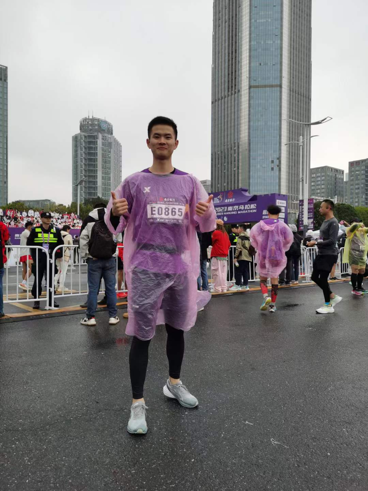

My Work
Photography

Qiong Lake (Chinese: 邛海; pinyin: Qiónghǎi), sometimes tautologically referred to as Qionghai Lake, is a freshwater lake in Liangshan Prefecture, Sichuan.
Marathon

Long-distance running: Participate 2023 NanJing Marathon (4h10min / 42.195KM)
-
My Work Conclusion
- Photography
- Marathon
- Photography
- Marathon